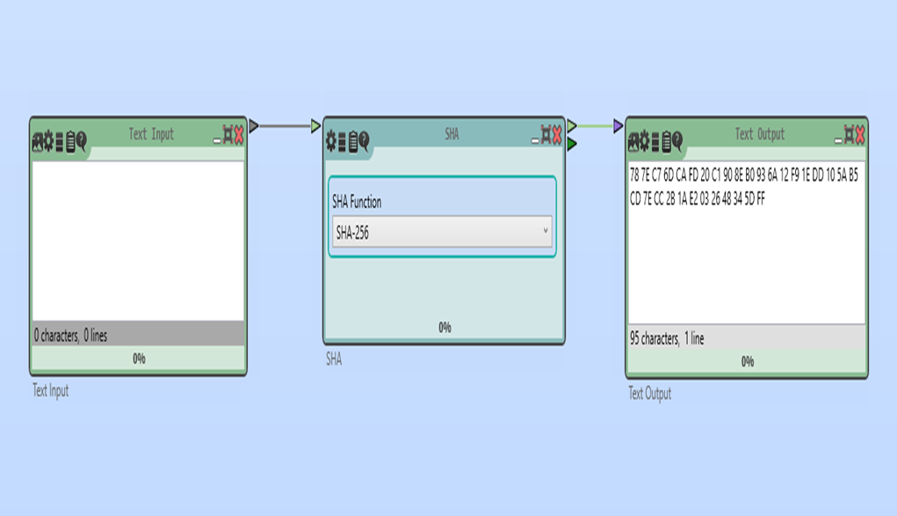

SHA-256 ХЭШ-ФУНКЦИЯСЫ
SHA-256 (Secure Hash Algorithm 256-bit) – криптографиялық хэш-функция, 256 биттік (32 байт) хэш мәнін жасайды. Бұл алгоритм қайтымсыз және деректердің өзгермегенін тексеру үшін қолданылады.
1. Жаңа жобаны бастау
Home → Жаңа (New) таңдаңыз. Жаңа жұмыс кеңістігі (Workspace) ашылады.
Қажетті блоктарды жобаға қосамыз:
- Text Input(Мәтінді енгізу)
- Text Output(Хэш мәтінді алу)
- SHA (Хэштеу блогы)
Text Input (Мәтін енгізу)
Мақсаты:
- Бұл блок арқылы хэштеу қажет мәтінді енгіземіз.
- Кез келген мәтінді енгізуге болады (мысалы: "Hello, World!")
SHA (Хэштеу блогы)
Мақсаты: Бұл блок мәтінді хэшке түрлендіреді. Хэштеу – біржақты процесс, яғни бастапқы мәтінді қайта қалпына келтіру мүмкін емес.
Параметрлері:
Text Output (Мәтін шығару)
Мақсаты: Бұл блок хэштелген нәтижені көрсету үшін қолданылады
2. Блоктарды суреттегідей байланыстыру

3. Мәндерді енгізіп нәтижені көру
"Play" (▶) түймесін басып, хэштеу нәтижесін қараңыз.
Нәтижесі:“HELLO WORLD” мәтінің SHA-256 хэш-функциясын пайдалана отырып хэштеу операциясын жасадық.
Қорытынды
- SHA-256 – қайтымсыз хэш-функция, оны деректердің бүтіндігін тексеру үшін қолдануға болады.
- Cryptool 2-де SHA-256 алгоритмін оңай жүзеге асырып, нәтижесін HEX немесе Base64 форматында көруге болады.
- Бұл әдіс құпиясөздерді, файлдарды немесе басқа деректерді хэштеу үшін пайдалы.